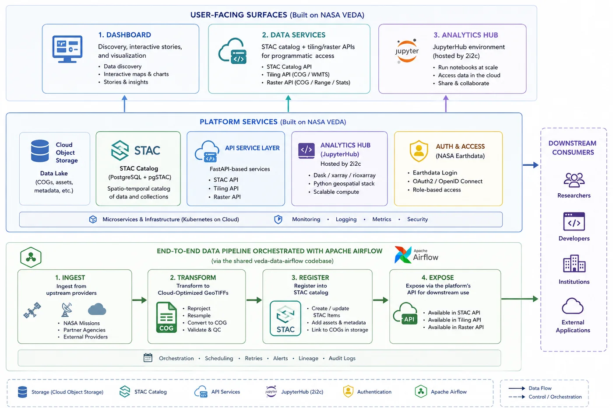
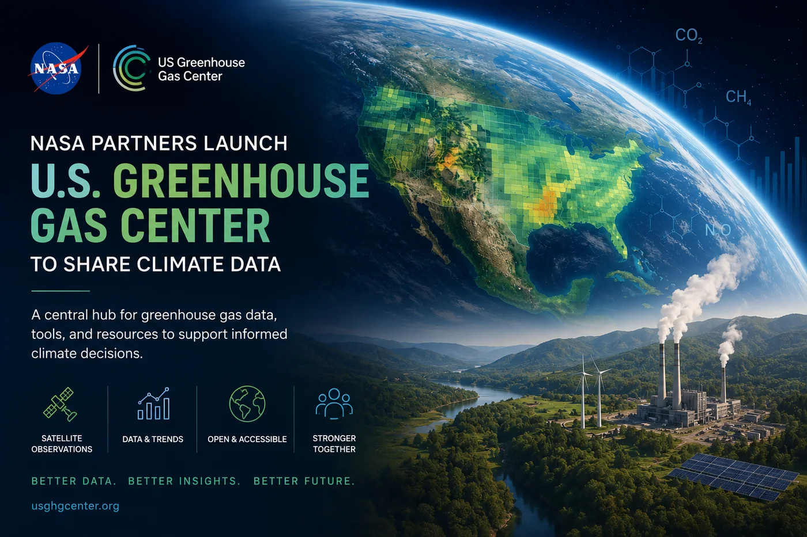

US Greenhouse Gas Center
The Veiled Currents
In this realm the air itself keeps ledgers no eye can read — carbon rising from cities, methane slipping from unseen seams. Four great houses kept their measurements apart: NASA with its satellites, NOAA with its reference network, the EPA with its inventories, NIST with its urban test beds. The Alchemist's task was to gather them into one hall.
The instruments are quiet and exact: Airflow-orchestrated pipelines that take each house's raw geospatial offerings and transmute them — into Cloud-Optimized GeoTIFFs that stream from object storage, into a STAC catalog where any seeker may query them, with a JupyterHub standing beside the data so the analysis never has to carry it home.
The hall opened its doors at COP28, in December 2023, presented by the NASA and EPA Administrators alongside the White House's national Greenhouse Gas Monitoring Strategy — every dataset, algorithm, and line of code released open, for scientists, policymakers, and the public alike.
Project record
Green House Gas Center is a platform based on the visualization, Exploration and Data Analysis (VEDA) project consisting of automated geospatial pipelines (Airflow + STAC + COGs) on AWS, supporting a scientific exploration presented at the White House and COP28.
Role
Data engineer (NASA IMPACT) — automated the end-to-end transformation pipelines converting geospatial data to Cloud-Optimized GeoTIFFs, orchestrated ingestion workflows with Apache Airflow and cataloged outputs into STAC-compliant metadata stores, and managed the AWS infrastructure (Lambda, API Gateway, EC2) backing the platform.
Stack
Results
- Platform unveiled at COP28 (Dec 2023) alongside the White House national GHG Monitoring Strategy, making curated datasets from four federal agencies programmatically accessible.
- Fully automated ingest → COG transformation → STAC registration pipeline, eliminating manual processing of contributed datasets.
Links
Artifacts from the realm

